Introducing Poor Man’s HID
Build your physical throttle the way you want it. Pick the switches, buttons, knobs, levers, and throws you like, connect them to one ESP32, configure them in a browser, and turn your creation into a Bluetooth Human Interface Device. Best of all, Poor Man’s HID is not tied to PMT — it can be used with any HID-compliant system.
Install Poor Man’s HID on an ESP32 Classic or ESP32-S3. The S3 is recommended for larger builds because it gives you more pins to work with.
Install Poor Man's HID Firmware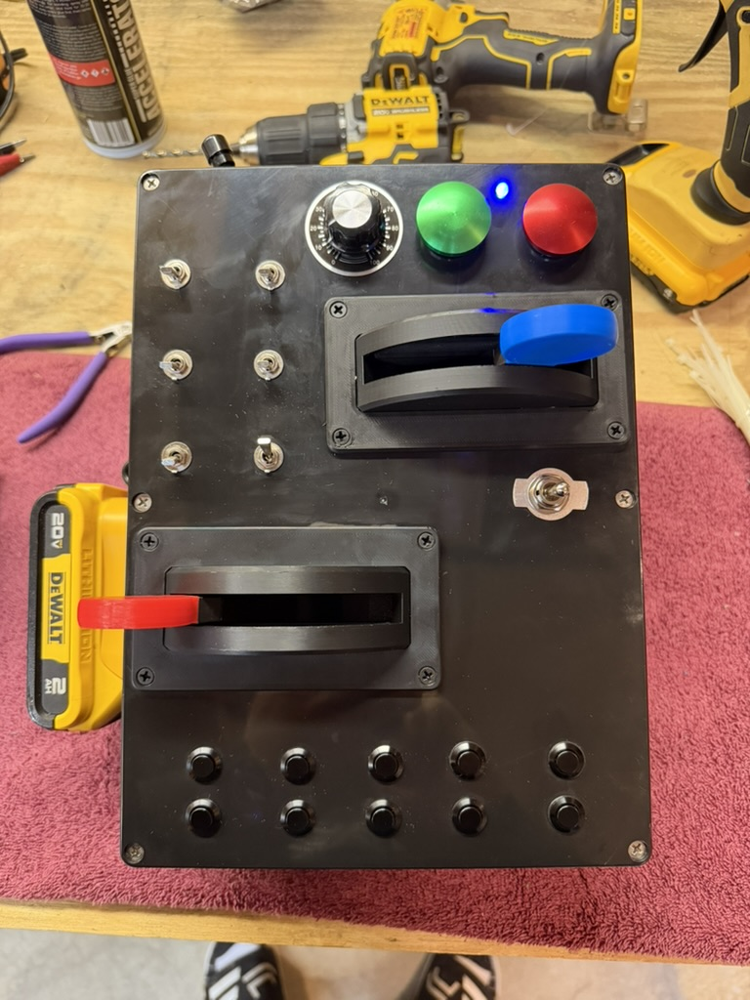
What is HID?
HID stands for Human Interface Device. It is the standard computers, tablets, and phones use for things like keyboards, mice, game controllers, and joysticks.
You dream it. You build it.
Use ordinary off-the-shelf hardware and arrange it around the way you actually like to operate.
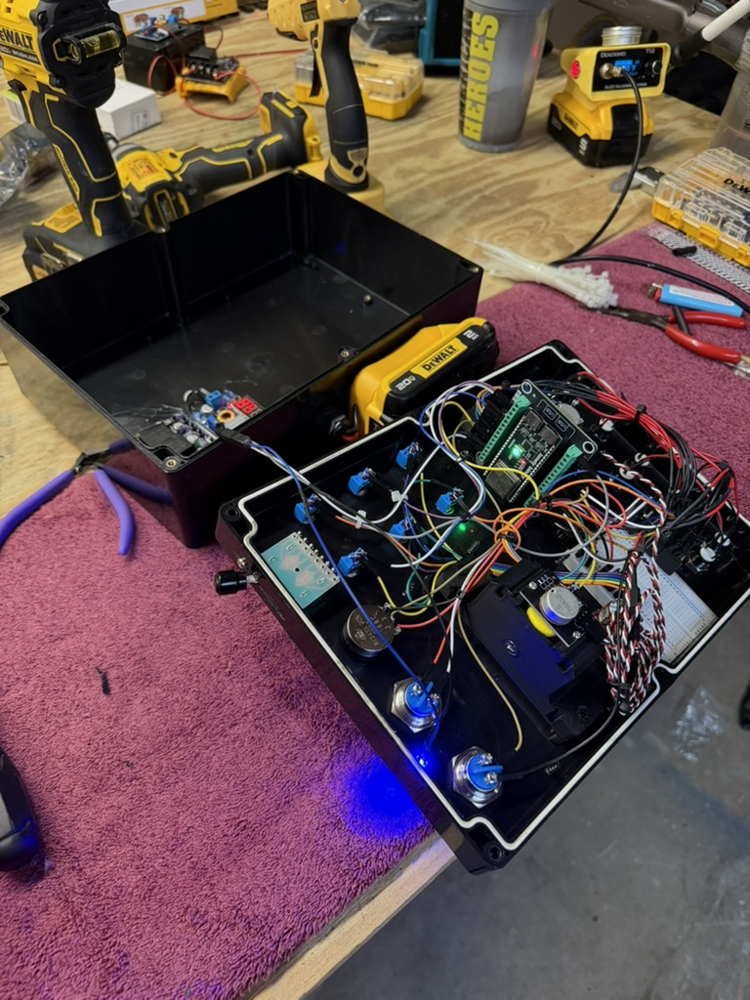
Build the enclosure and control layout that fits your operating style.
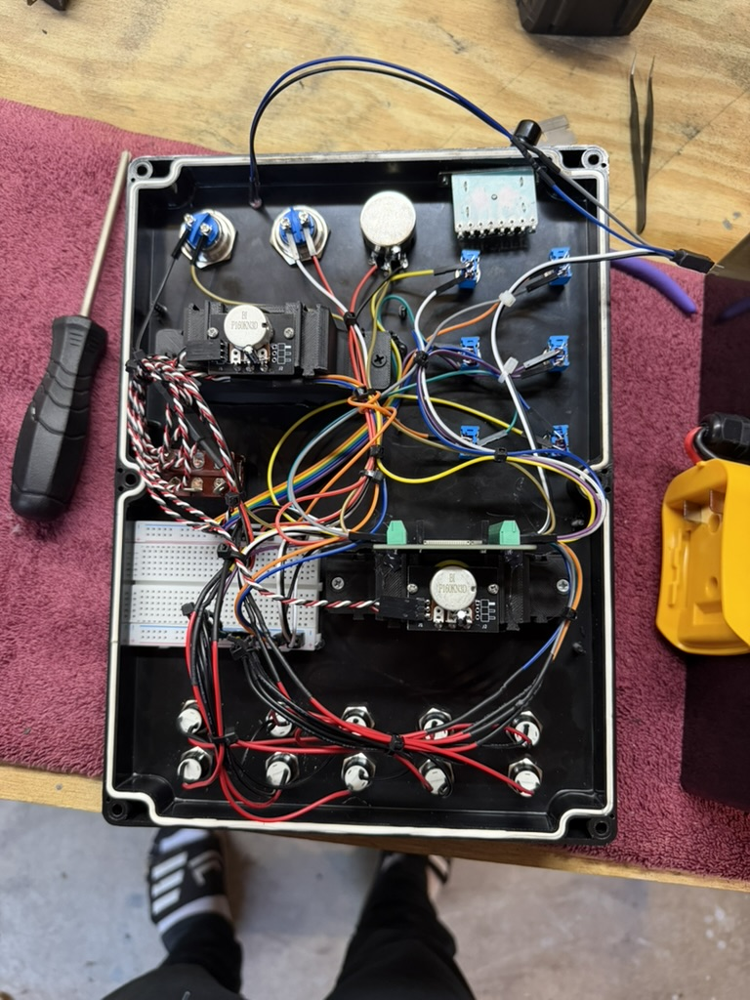
Use real buttons, maintained switches, momentary controls, potentiometers, selectors, and other physical hardware.
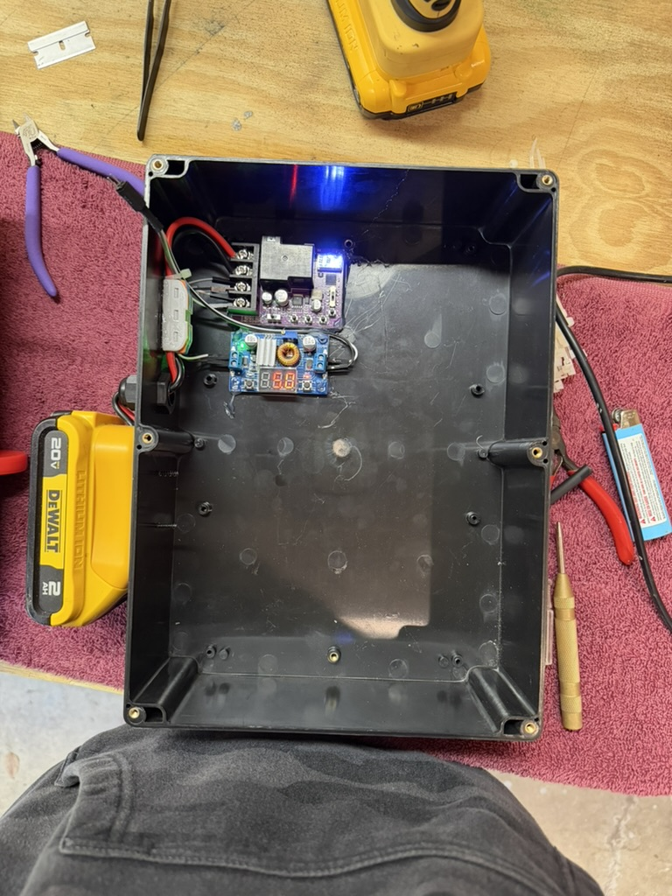
One ESP32 is the heart of the controller. Your supporting hardware can be as simple or ambitious as your project requires.
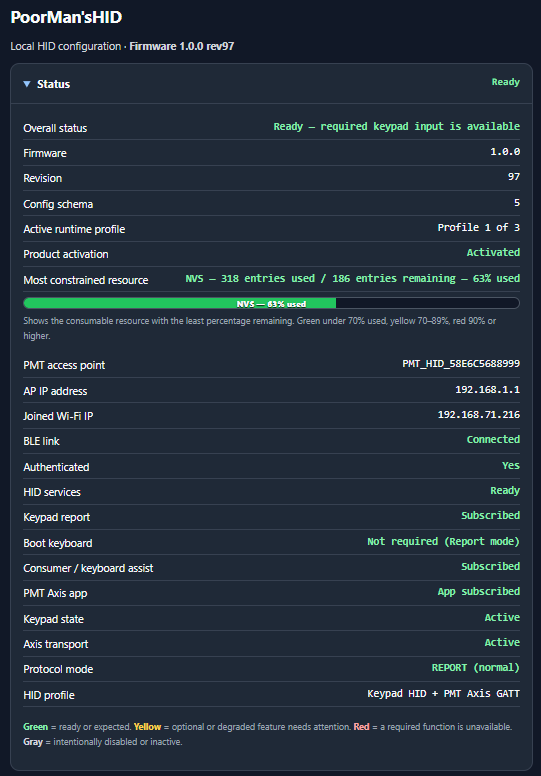
The firmware gives the finished hardware a complete browser-based configuration and diagnostic environment.
Configure it from a browser
No custom configuration utility is required. After flashing the firmware, connect to the HID’s built-in Wi-Fi access point and open the configuration site.
Use the PMT Information Hub to flash an ESP32 Classic or ESP32-S3.
The access point name is
PMT_HID_<12 characters>.Browse to
http://192.168.1.1.Name them, choose their control type, map them to HID keys or axes, test them, and save the profile.
The web interface does the heavy lifting
The firmware exposes the tools needed to build, test, troubleshoot, and document the controller without having to guess what the hardware is doing.
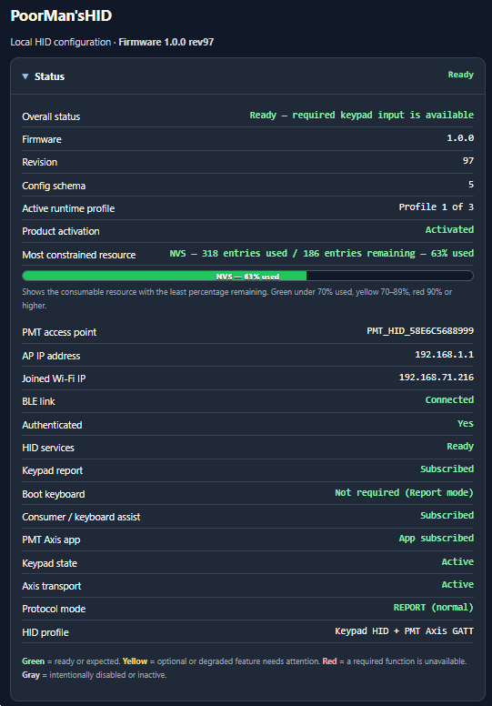
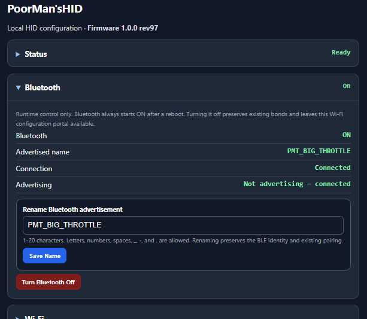
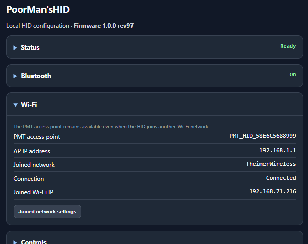
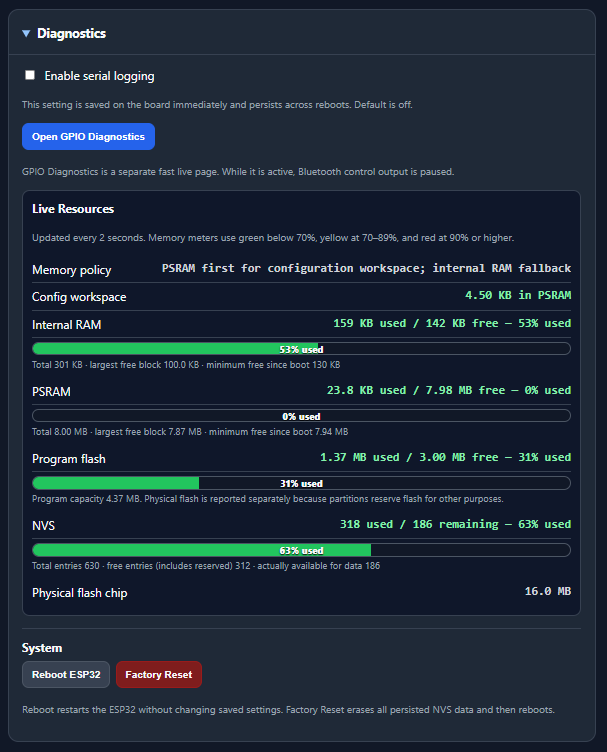
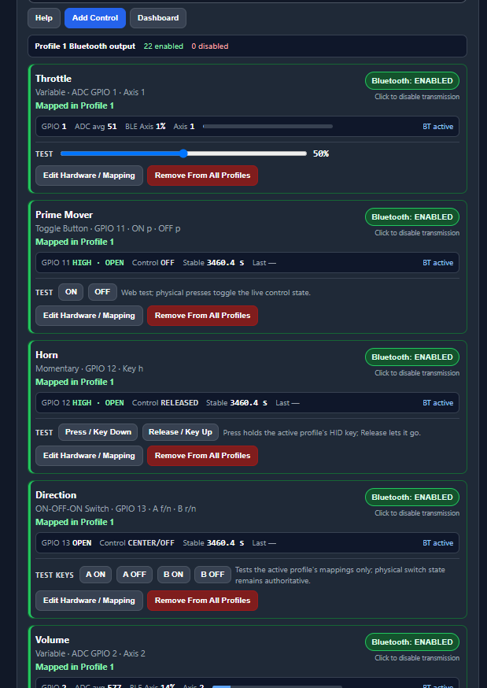
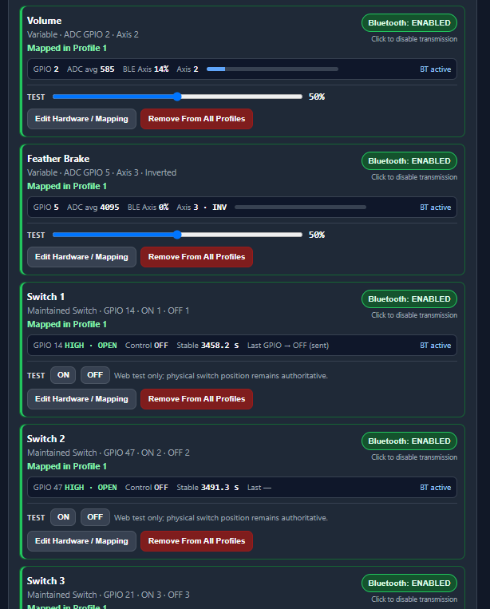
Use the control that makes sense
Poor Man’s HID supports several physical control behaviors so the firmware can match the hardware you actually want to use.
Watch your controller work in real time
The live dashboard turns the controller into something you can see and verify instead of simply hoping every wire and mapping is right.
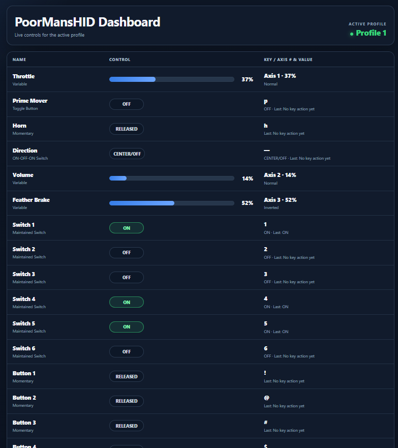
Diagnostics built for builders
DIY is a lot more fun when you can actually see what the electronics are doing.
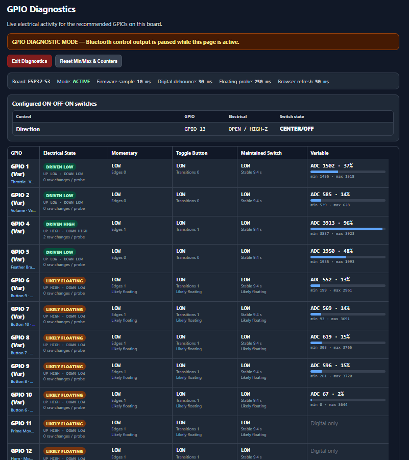
It even draws the wiring for you
As you create controls, Poor Man’s HID generates wiring documentation specific to your configuration — printable and downloadable as PDF.
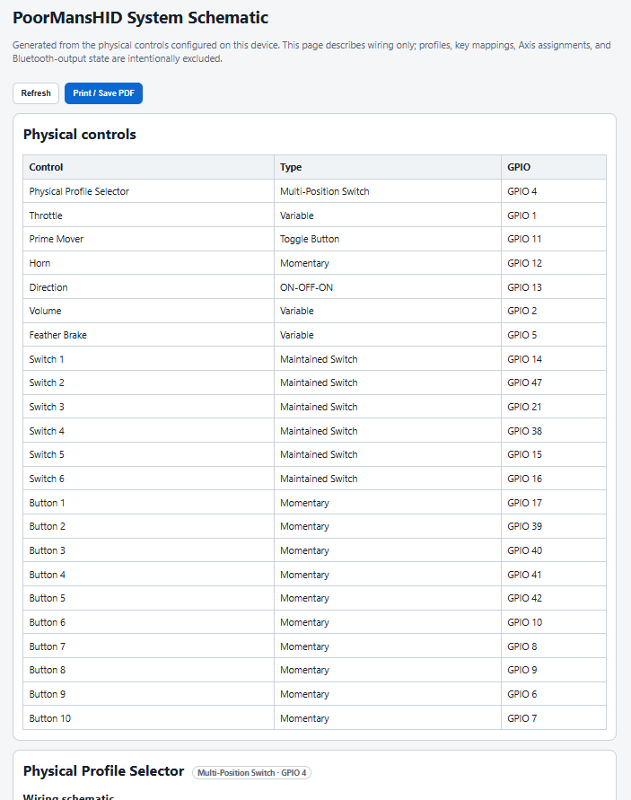
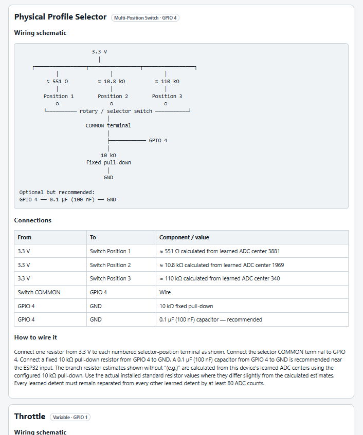
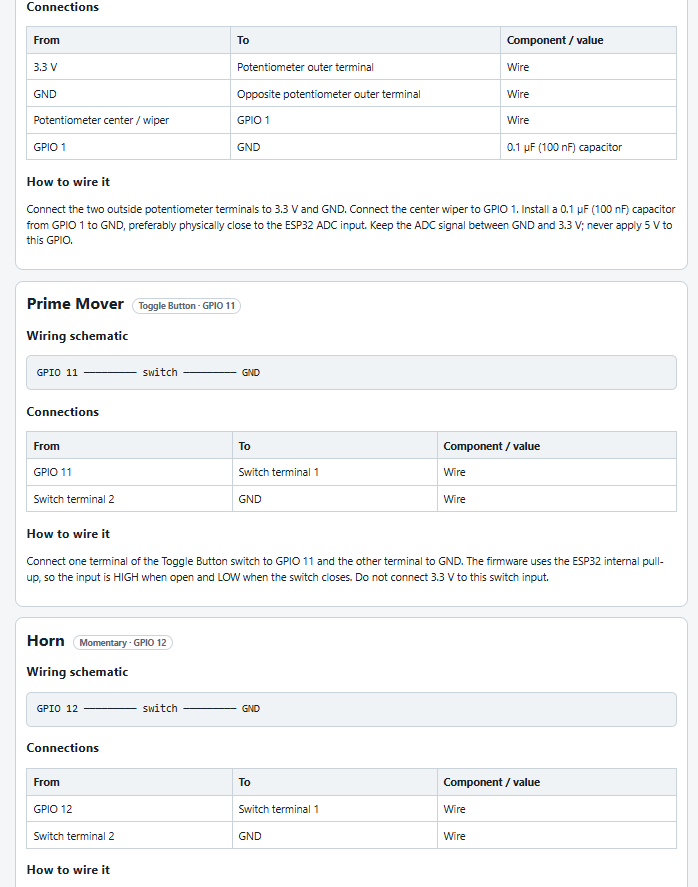
Design it. Build it. Configure it. Use it.
That is the whole idea behind Poor Man’s HID.
Your hardware. Your layout.
Use an ESP32 and ordinary physical controls instead of being forced into somebody else’s idea of what your throttle should look like.
Not PMT-only.
Your finished controller presents standard HID inputs, so it can be useful beyond Poor Man’s Throttle wherever compatible HID input is accepted.